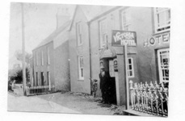
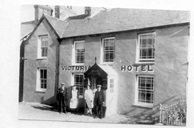

Tafarn y Fic
Yn 1861, cofnodwyd bod Victoria Tavern yn y pentref. Wiliam Williams oedd y tafarnwr. Yn 1874, John Roberts oedd y tafarnwr. Arferai Darock, gwyliwr y glannau, aros yn y Ring. Cynhaliai Doctor Jac ei feddygfa mewn ystafell yn y dafarn. Ar ddechrau 1987, penderfynodd Lloyd and Trouncer gau’r Victoria Inn. Yna daeth criw o bobl leol at ei gilydd i sefydlu cwmni cydweithredol, lansio apel genedlaethol, prynu’r adeilad ac ailagorwyd Tafarn y Fic fel tafarn gydweithredol ar 20 Mai 1988.
Robert Roberts, tafarnwr y Ring, o flaen y Victoria Hotel.
Cofia Dewi Williams, Brynmor fod Darock, gwyliwr y glannau, a oedd gwylio glannau Môn rhag ofn i’r Germans ddod, yn aros yn y Fic am gyfnodau rhwng 1940 a 1950. Mae hefyd yn cofio syrjeri Dr. Kildare yn cael ei gynnal yn y Fic wrth ymyl y tân.
Adeiladwyd y dafarn yn 1869. Arferai Dr. Jack y meddyg lleol gynnal ei feddygfa mewn ystafell yno (Cofnod o’r Arddangosfa)
Dyma rai o atgofion Hywel Roberts, a fagwyd yn y Fic.
Roedd William Williams, tafarnwr cyntaf y Victoria Tavern, yn adeiadu tai a prynodd dir ger yr ysgol, a datgan bwriad i adeiladu tafarn iddo gael ei redeg heb ymyrraeth gan y bragdy. Gwrthodwyd rhoi caniatâd iddo, gan fod un tŷ tafarn yn ddigon i bentref bychan fel Llithfaen! Yn 1874 aeth i fyw i Compton House drws nesaf.
Yn 1874, dewiswyd John Roberts, fy hen daid, gan y bragdy, Burton Brewery i fod yn dafarnwr yn y Victoria Inn. Roedd ganddo saith o blant, a ganed pob un yn y Fic, John Henry yn 1875, Hannah yn 1876, Ellen yn 1878, Mary yn 1880, William yn 1881, Thomas (fy nhaid) yn 1884 a Llewelyn yn 1887.
Adeiladodd John Roberts res o bedwar tŷ, ychydig yn is i lawr ar ffordd Pwllheli sef, Rose Hill, Rose Villa, Islwyn a The Nest, ar gyfer ei blant. Aeth fy nhaid a nain i fyw yn Rose Hill a chafodd fy nhad ei eni yno yn 1910.
Robert Roberts, Hannah Roberts a Gwylwyr y Glannau fyddai’n dod i aros yn y Victoria Hotel weithiau.
Bu John Roberts farw 1920 a’i wraig, Jane, yn 1921. Daeth Hannah, ei merch a’i gŵr, Robert Roberts, yn denantiaid yn y Fic wedyn. Arferai gwyliwr y glannau aros yn y Ring. Byddai’n galw yn y chwareli pan fyddai llongau’n llwytho yno.
Ar ôl i Robert farw yn 1933, Hannah, gyda cymorth ei chwaer Mary (Minnie), oedd yn cadw’r dafarn, a hynny tan y 1950au, pan wnaed y penderfyniad i gau.
Pan o i’n blentyn, Hannah a Minnie dw’i gofio yn y Vic, a byddai Taid yn mynd a fi i’w gweld yn aml.
Ar ddechrau 1987, penderfynodd cwmni Lloyd and Trouncer gau tafarn y Victoria Inn yn y pentref. Dyma’r tro cyntaf ers dros ganrif i Llithfaen fod heb dafarn. Yna daeth criw o bobol leol at ei gilydd a’r canlyniad fu sefydlu cwmni cydweithredol, lansio Apel genedlaethol a phrynu’r adeilad yn Mai 1988. Ailagorwyd Tafarn y Fic fel tafarn gydweithredol ar 20 Mai 1988.